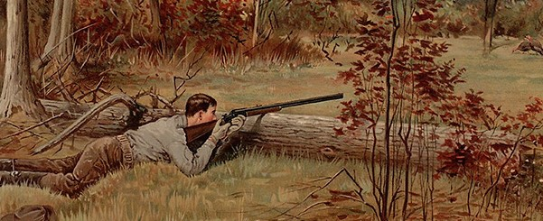
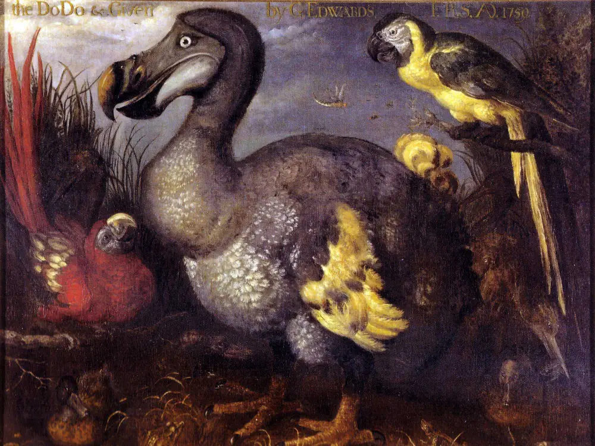

|  Humans hunted the dodos for their tasty meat. This image was found from this website. |
1.Humans hunted them.The slow speed of the dodos allowed humans to easily hunt them down. Furthermore, the dodos had never faced any predators before, thus they did not try to run from the humans which made them easy meat. |
|---|---|
2.Other animals outcompeted them for resources.When humans arrived on Mauritius, they brought many animals from their ships such as cats, rats, pigs and monkeys which outcompeted the dodos for food, territory and other resources causing many of the dodos to die off. |
 This picture used was found on this website. |